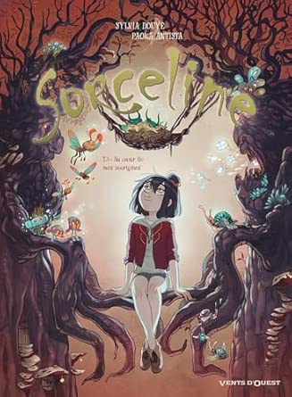

Tome 3: Au coeur de mes zoorigines
Auteur: Sylvia Douyé et Paola Antista
Genre: Fantastique
Année: 2020
Maintenant que tout le monde sait enfin qui transformait les êtres vivants en statues de verre, on se demande bien comment le coupable a procédé. Tandis que Willa tente d'éclaircir les zones d'ombres qui planent encore au-dessus de ce mystère, Sorceline part à la conquête de ses origines en cherchant à découvrir d'où vient cet étrange animal qu'elle est la seule à voir. Malgré tout, il faut aussi s'occuper des créatures en détresse. Justement, l'arrivée d'un nouveau malade et la découverte de sa véritable nature vont jeter un voile trouble sur la ténébreuse île de Vorn...